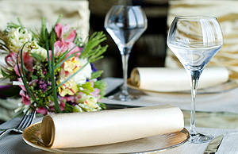

Acerca de nosotros
En Mojarras "El Buki" , ponemos a su disposición la más cuidada producción de mojarra-tilapia viva, en venta a pie de granja, es decir, usted lo recibirá directo de nuestros estanques.
Nuestros peces son criados con altos estándares de calidad y las mejores prácticas de sanidad acuícola, para que usted está seguro que sus clientes y su familia recibirán un producto impecable para ofrecer en su empresa y su mesa..
Su familia además podrá conocer el proceso que implica la crianza de mojarra-tilapia, descubriendo que el sabor de un pez cuidado y fresco es totalmente distinto al que encontramos en cualquier lugar, siempre congelado.
En Mojarras "El Buki" , tenemos siempre presente que nuestro producto está destinado a su paladar, por ello nos esmeramos en proveer a nuestros peces de un ambiente propicio con agua naturalmente limpia y tratada para lograr su total sanidad; les vigilamos para que ni el frío ni depredadores los alteren; y les alimentamos con la más alta calidad de nutrientes en las proporciones ideales a su tamaño y peso.
The Best of Professionals
 Deneger convallis orci vel mi delaoreet, at ornare lorem consequat. Phasellus era nisl auctor vel velitero.
Deneger convallis orci vel mi delaoreet, at ornare lorem consequat. Phasellus era nisl auctor vel velitero.
 Reenteger convallis orci veli saelaoreet, at ornare lorem konsequat. Khasellus era jauctor vel veliteru.
Reenteger convallis orci veli saelaoreet, at ornare lorem konsequat. Khasellus era jauctor vel veliteru.
 Ortolieger convallis omi tem more, at ornare loren coatr. Lasellus era nisl auctor vel veliterolsed pharetr.
Ortolieger convallis omi tem more, at ornare loren coatr. Lasellus era nisl auctor vel veliterolsed pharetr.
 Gonvallis orci vel mi oreilat otornare lorem consequat. Kllus era nisl auctor veli detelolvenenatis nullo.
Gonvallis orci vel mi oreilat otornare lorem consequat. Kllus era nisl auctor veli detelolvenenatis nullo.